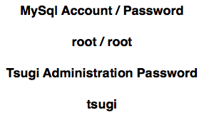

This is a free, hosted developer instance of Tsugi. It is reset daily at midnight Eastern. It runs the tip of the master branch of Tsugi. You can test applications on this site, learn how to administer a Tsugi instance, or use it for demonstrations.
Accessing this Server

References
The Jekyll version of the Grayscale theme is brought to you by Jerome Lachaud